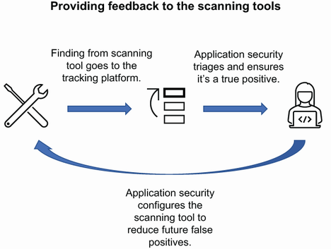

9 Continuously improving the program
Determining whether your application security program is effective
Learning which metrics should be gathered and visualized
Identifying who needs to know about the program’s success
Getting feedback from your clients
Using your metrics to drive improvement
You’ve developed a program that addresses security at the different stages of the development pipeline. You have a roadmap that plots the midterm and long-term goals of the application security team going forward. But how do you know whether the program is effective and that all that hard work that you and your team have put in has paid off? Gathering metrics is a priority for any project or program to ensure that the returns are there from the initial purpose of the project. But metrics are also used to determine whether the project is on track and will complete with the expected outcomes.
For security projects, specifically, the metrics are not much different. You still want to know whether the project is on track and will have the expected outcome. However, they are also used to determine whether the processes you have are working, whether the security posture of the organization is getting better, and whether the tools you use are effective. This can be helpful if you are looking at new tools to fill a gap or a competitor to a current tool so that you have baselines and an opportunity to compare current state with a potential new tool.
We covered a lot of tools and process in this book, and each one will bring its own set of vulnerabilities and metrics. From a vulnerability standpoint, this can be noisy and time-consuming for those who must track and close the vulnerabilities. But from a metrics standpoint, with the intention of understanding whether the tools are effective or need tuning, the information from these tools is invaluable.
Definition Tuning is not a specific application security term, but rather it is related to configuring a tool to run at optimal performance. However, in application security, tuning can take on a different connotation where the tool will be tuned to eliminate noise or false positives, manage alerts, and correlate with other tools to ensure accuracy.
Tools that are improperly tuned can create alert fatigue, where those that are responsible for responding to incoming alerts and notifications become less attentive to the potential findings. This is exacerbated by tools that create a lot of false positives, which leads to the reduction in confidence of the tool. As an example, SAST is notoriously noisy with false positives. Not that other tools are not, but SAST has been historically aggressive with over-reporting. This means that when the SAST tool finds a variable named password, it will flag it as a hardcoded password in the source code. This example is most likely not a hardcoded password, but having to triage each example of a variable named password will soon become exhausting. SAST tools are getting better at detecting these types of false positives, but work still remains.
When the tool vendor does not have a good solution for how to solve for the false positives—and to be clear the vendor will normally tell the organization that the tool is working as expected—then it is up to the organization to determine the integrity of the data coming from the tool.
Note I am painting with a very wide brush. Not all vendors will tell you to just deal with the false positives. It’s in their interest to ensure that the tool works as expected and provides value to the customer. Additionally, not all tools create an abundance of false positives. However, if you intend to bring in a security tool, switch it on, and walk away from it, you will quickly find yourself in alert fatigue.
This is where good metrics will help the organization determine whether a single tool, or a suite of tools, offers the value that they need and paid for. So, which tools or processes should be measured to understand how to arrive at the best outcome?
We use measurements to determine the effectiveness of our tools when we take the output from the tools and dig in to the quantitative and qualitative metrics.
Definition Quantitative metrics are those that are based and backed by actual numbers. An example would be how long it takes for the first-level support team to respond to a client issue. This is measured in minutes, hopefully, and will be an average based on a period of time. Qualitative metrics are those that are gathered through interviews, discussions, or questionnaires. These are less driven by numbers and more based on a gut feeling by the respondents. For example, a qualitative metric may be gathered by sending a survey to the engineering teams that work with the application security team to understand how pleased they are with the interaction with the application security team.
First, I want to clarify which tools we are talking about for the application security tools. These would be the following:
Static application security testing (SAST)
Dynamic application security testing (DAST)
Interactive application security testing (IAST)
Software composition analysis (SCA)
Run-time application security protection (RASP)
Web application firewall (WAF)
When it comes to measuring how well these security tools are working, you will focus on the quantitative metrics, as these will give you numbers that show two important aspects of your tools:
How many vulnerabilities are being opened from each tool
How many of these opened vulnerabilities are true positives versus false positives
Having this information in hand will allow your application security team to tune the specific tool that is being used and is introducing false positives.
As an example, a SAST tool in the Superior Products organization was recently integrated into the development pipeline. Although Dashing Danielle has taken time to create custom rules in the SAST tool to handle some of the findings from the development team that participated in the POC, most of the rules and configurations are default from the vendor. For the wider organization, these default rules and configurations may not apply to their technology, code language, or processes. Dashing Danielle asks that the application security team take time to evaluate a set of findings through a spot audit. This means that the team will take a sampling of findings and begin to triage them to understand whether they are false positives and whether the tool needs to be adjusted to limit the false positives, as depicted in figure 8.1.

Figure 8.1 Triaging output from a scanning tool identifies tuning opportunities
During this spot audit activity by the application security team at Superior Products, they were able to discover that the SAST tool for Stuff-For-You, the organization’s flagship product, flagged several examples of race conditions that can plague multithreaded code.
Definition Threads are a unit of execution in an application that is used to perform some task. When multiple threads are used, the application is considered multithreaded. Depending on the hardware, the threading can run in parallel. A race condition occurs when two or more operations complete out of sequence, creating a defect in the code.
However, the code where these issues have been found is not actually multithreaded when it is executed, and therefore the findings can be marked as not applicable. This allows the application security team to set that particular project for Stuff-For-You to safely ignore this category of findings from the SAST tool and eliminate them from future output.
Getting information related to false positives is great for understanding the amount of potential wasted time and effort related to these tools, but what about the actual effectiveness of the tool finding true positives? If the organization has several different scanning tools, like SAST, DAST, and SCA, in the development pipeline and the three tools generated 20 findings in their first week of operation, how does the organization know those are the only vulnerabilities impacting the application? Although, no matter how many tools you layer into the pipeline to discover vulnerabilities, you will never uncover all of the ones that impact the given application. These are considered false negatives. However, the other tools and processes should be used as feedback into the scanning tools as well. For example, it’s not uncommon to look at findings from a penetration test, or one that was identified from an external source, and ask the simple question of why the issue was not found in existing tools.
A good example of using other tools and processes to identify false negatives is by taking the findings from an external penetration test and reviewing the configuration in your DAST or IAST tools to determine why the issues were not found in them. At Superior Products, their annual external penetration testing engagement discovered several vulnerabilities in the Stuff-For-You product. One of the most curious was that XSS was found in the application. Considering that there are SAST and DAST tools that are used in the pipeline, the application security team was unsure how this would have slipped past both of those tools.
Dashing Danielle works with the application security team and the development team to look at how the DAST and SAST tools are being used and what code is being scanned. Through this effort, she is able to determine that the particular model that was tested during the penetration test is actually not being scanned by either the SAST or DAST tool. Through configuration, the project was omitted in the code base because the code was being replaced by newer code that used more modern techniques. However, this code was still being delivered to production while the new code is developed and tested. This is a prime example of misconfiguring the security tools in a way that leads to the organization unknowingly being exposed to vulnerabilities.
Although we’ve talked about the scanning tools and how they should be tuned, the protection tools that are used in the run-time environment also need to be considered. The organization may have a WAF or a RASP deployed in their environment to detect and block known vulnerabilities as they attempt to attack the organization. With these tools, the tuning that is appropriate is to ensure the following is not occurring:
Legitimate traffic is not being blocked.
Illegitimate traffic is not getting through.
Both of these cases have real impact on the organization. Stopping your customers from accessing your sites will certainly raise concerns with them, maybe as much as letting an attack through your protection tools. How most application security teams address this is through a staged approach to integrating the protection tool. For example, in Superior Products, the application security worked with the Stuff-For-You team to integrate a WAF with their production domain. Before they did this, they first integrated the WAF for one of the Stuff-For-You pre-production environments. This allowed both the application security team and the engineering team to test whether the traffic that flows through the WAF is providing value and is not interfering with normal traffic. However, once they integrated the WAF with the pre-production domain, they quickly found several issues related to dropped traffic and a reused digital certificate. The team was able to quickly resolve the certificate reuse by procuring a unique certificate for the domain. However, the drop in traffic took additional troubleshooting for the application security team. It was eventually determined that there were DNS changes that needed to be made on a forward proxy with one of the biggest customers of Stuff-For-You. Superior Products reached out to the client and was able to resolve the DNS issue. Traffic improved and the application security team was able to begin monitoring for potential malicious activity.
Because the WAF was enabled on a pre-production domain in the initial stages, the likelihood of external attacks was nonexistent. The domain was not publicly exposed, meaning there was no ability to see real-world attacks from external sources. The application security team, however, was able to automate security testing with their DAST tool and leverage their penetration testing skills to simulate attacks against the WAF. Through this effort, the team was able to determine that the bad traffic that was expected to be blocked as well as the good traffic that the application was expecting was all in order. After 2 weeks of testing in the pre-production environment, the lessons learned and the data that was gathered provided enough confidence to move to the production domain with minimal impact.
Although getting the WAF integrated with the production domain is considered the final step in integration, there is still ongoing work that needs to be done to tune these types of run-time protection tools. The organization must have a means to handle the following:
Newly discovered attacks in the wild. These are attacks that may be able to circumvent the run-time tool and leverage an attack against an application.
Changes to the run-time protection tool rules. The vendor will have updates available on a continuous basis as things in the technology world change. These updates are often pushed automatically, but it depends on the vendor and product.
Environmental changes. As the organization changes, their threat landscape and risk profile changes with it. A change in technology with the web server that is behind the WAF may require a change in the patterns used to detect attacks. For example, the run-time environment may have changed from Java to Rails, which could eliminate several classes of vulnerabilities.
What is important is for the organization to have a process to monitor and adjust their run-time tools as things change and as different needs arise. Using these processes to monitor, gather metrics, and feed that back into the run-time tool can help the organization ensure it is running in a manner that does not negatively impact the organization. However, the effectiveness of the security processes goes beyond tool tuning.
Organizations run on processes. Large organizations will even have processes on how to create and manage processes. From a security perspective, the processes that the application security team are most concerned with are the ones that relate to the security scanning tools, vulnerability management, penetration testing, and security education. Although every organization is different and will have separate processes, depending on the maturity of the organization, these are the basic ones you will see in an application security team and the ones I will focus on here.
As discussed previously in the chapter, tuning your security tools will help ensure you are getting quality results from the tool. But measuring the effectiveness of your process around your tools is equally critical. One metric for the effectiveness of your tools is to review the amount of time it takes for the engineering teams to close out found vulnerabilities, as shown in figure 8.2. This means that when a finding is produced from the security tool used in the pipeline, how long does it take to be triaged by the application security team, assigned to a development team, and deployed to production?

Figure 8.2 What is the time to remediate a vulnerability
This type of metric is often called the mean time to remediate (MTTR). This means from the time the issue was discovered to the time that it was remediated and deployed into production, often measured in days. Having this metric is critical in knowing how well your vulnerability management processes are working and how well your development teams understand what is being asked by them. Some common issues that can cause delays with the MTTR are
Not having the right points of contact in engineering
Not having enough information to resolve the issue
Not having the right priority on the open vulnerability
Not having a well-tuned development pipeline that allows for the fast release of code
Not having quick access to retesters
Each of these issues will drag down the organization’s ability to close out a vulnerability in a timely manner, and leave it exposed for longer than necessary. Furthermore, the organization is typically introducing new vulnerabilities on a daily basis depending on how their security tools are set up.
To have the effective processes in place to tackle a vulnerability, the organization has to consider what they would do in the event of a critical vulnerability that needs immediate remediation. This is not an uncommon occurrence in the security world. New vulnerabilities come out that can require the organization to drop everything and remediate. A great example of this was the Log4j issue I mentioned in chapter 7. This required immediate remediation by any organization that was using Log4j in their logging process. Once the application security team, or the broader security organization, found out what the exposure was in the organization, they then began working with the engineering teams to formulate a path forward.
Using Superior Products as an example, the process of getting a newly discovered vulnerability to remediation would need to first identify the organization impact—in other words, which applications are impacted by this vulnerability found in the specific tool. At Superior Products, they maintain a registry of the owners of each of the applications in each of the scanning tools they operate. This includes a distribution list email address, and the appropriate ticket tracking system that applies to this solution. Internally, the application security team needs to have a service level agreement (SLA) on how quickly they will acknowledge and triage an issue found in a scanning tool. The application security team will triage the issue to determine whether it is a true positive and then send the ticket to the tracking system or an email to the distribution list. In the ticket, the application security team will include all the relevant information needed to remediate the issue, including links to more information or training.
Once the development team receives the information, depending on the criticality of the issue, they will begin to work toward a remediation. They, too, will have SLAs associated with remediating the issue. As mentioned in previous chapters, the organization will have developed a time to fix associated with each found vulnerability that is aligned with the criticality. With the remediation steps and the timeline defined for them, the engineering team will begin to develop the remediation that aligns the remediation time with the release schedule for the application. This means that for a critical vulnerability that needs to be resolved within 30 days, the remediation code should be released in a patch that is released within that time frame. During the time the development team is working on the remediation, the application security team will develop the retesting process that should include manual steps as well as potential automated testing scripts that will test whether the vulnerability is still present in the application once the remediation code is deployed. From here the remediation code will follow the same path as any other code release in the sense that it will be built and deployed following the standard pipeline practices that the development team follows (figure 8.3).

Figure 8.3 Optimizing the MTTR
This workflow can get more complex when you are juggling multiple vulnerabilities. Most organizations are not lucky enough to work only one vulnerability at a time. They will have dozens in their backlog to slot for upcoming releases with varying criticality. Each criticality will have a time to remediate a target that is set by the organization. Aligning all of these to the release, and still managing to be within the time to remediate timelines, is not an easy task. To find the organization’s mean time to remediate, per criticality, the organization can take aforementioned inputs of each vulnerability and put together something similar to table 8.1.
Table 8.1 Sample MTTR for low through critical vulnerabilities
Having this information in hand is an important input into the overall metrics that are needed by the organization to understand how efficient they are at closing particular criticalities. I talked about both the tool and the process data collection to help an organization understand its application security effectiveness, but there are other pieces of data that an organization will want to gather.
Programs are generally put in place to drive new processes and products or to solve a problem for the organization. With an application security program, the organization will want to see improvement in a few key performance indicators (KPIs).
Definition A KPI is a way for an organization to measure the effectiveness of a long-term goal.
Organizations will have KPIs for many different goals that they are working toward, especially as it comes to the business side where they want to see how effective they are being at meeting customer requirements. However, in the engineering, and specifically the application security world, the KPIs will focus on how effective the program is at stopping vulnerabilities and having a quicker reaction to discovered new ones. To this end, the application security team should focus on developing the metrics and align them to goals that address the following:
How the business risk is reduced over a given time period (month, quarter, annual). This relies on the business having identified the open vulnerabilities, assigned criticality to them, and put them into the context of business risk.
How quickly the organization can resolve open vulnerabilities from initial identification to remediation in production. This is what I covered in the previous section.
How frequently vulnerabilities are being reintroduced in an application. For example, an application may have discovered multiple SQL injection vulnerabilities in the same project. Unless the root cause is being addressed, these will continue to be introduced.
How much coverage the application security program has in terms of the security tools it uses (SAST, DAST, IAST, WAF, or others). This will be an overlay of the known development pipelines and run-time environments with the tools that are integrated with them.
Whereas every organization will have different KPIs they may want to track, these are fundamental ones that will be effective in measuring how well the application security team is doing in reducing the overall risk of the organization. So, how can you create these KPIs?
Creating a KPI measurement process can be simple or complex depending on how deep the organization wants to get with the data. For the KPIs I will use for measuring the success of the application security program, I will keep it relatively simple given that the measurements are qualitative in nature and simple to measure. The four KPIs that I outlined previously can be summed up into the following labels:
Reintroduction of vulnerabilities
Application security coverage
For each of these KPIs, the application security team will start by outlining the criteria of the KPI that they need to capture information on. They will start with a simple document that captures the relevant information, as shown in table 8.2.
Table 8.2 Sample KPI data collection
Number of vulnerabilities opened should be reduced to be within business risk | ||||
Gathering this information will guide the future data collection and aid in the reporting of progress toward the goals.
Note To be clear, gathering this information is not for the faint of heart. Ideally the organization will have automated ways of collecting this information. Without that, the team, or individual tasked with collecting this, will quickly become overwhelmed, disorganized, and discouraged as they have to wrangle with all the sources to collect it.
For this particular case, the organization is looking to reduce the overall vulnerability count in the organization. The vulnerabilities will be identified in the scanning tools that the organization has in place, and the KPI data will be refreshed weekly. The target, or goal, of this KPI is to be within the predefined business risk threshold.
An owner of the KPI needs to be identified for the collection and reporting of the progress toward the goal. In the case of the open vulnerabilities KPI, the ownership is with the application security team since they have the broad view of the scanning tools and can easily report at the organization level. At Superior Products, Dashing Danielle has been put in charge of collecting the weekly metrics and sharing them with stakeholders from the security, engineering, and business organizations on a weekly basis. This is informally done through a weekly email notification. However, as the KPI collection and reporting matures, this will change over time to become a more robust method of reporting to the stakeholders.
Once the KPIs have been identified, the organization needs to address its desired targets for the given KPI. In many cases, this may be driven by outside pressures such as regulatory, contractual, or other demands. The simple target for the previous example in table 8.2 was that the organization will keep the open vulnerabilities within the business’s acceptable risk. This assumes that the acceptable risk has been properly classified and agreed upon by the business and security organization. In chapter 6, I talked about the level of risk that the organization has identified as its acceptable level. This should be in line with what the target of the open vulnerability KPI is.
Taking another example with the MTTR, the organization will first gather its baseline metrics for the MTTR that currently exists. In the example in table 8.3, the organization has decided they will target a 14-day MTTR for critical vulnerabilities. This means that the average time from declaring a critical vulnerability a true positive to the remediation code running in production should be 14 days or less.
The application security team will use the defect tracking tool in the organization to track the progress of each of the true-positive critical vulnerabilities that are discovered. Although the development teams are resolving vulnerabilities, new ones will be discovered, triaged, and put into the queue for resolution. The overall tracking of critical vulnerabilities will look something like table 8.4.
Table 8.4 Tracking of critical vulnerabilities
The MTTR for these four vulnerabilities is 15 days. This is significantly less than the SLA of 30 days for critical vulnerabilities, but not within the KPI metric that the organization wants of 14 days. Using these metrics, the organization can make some improvements.
Now that the organization has targets, has collected the information, and knows what its goal is, it’s time for them to drive to get their KPIs in line with the targets. To do this, the team responsible for driving the KPI will be required to provide several reoccurring functions that will assist in driving down the KPIs:
Regular and automated metrics gathering. The organization will want to ensure that it can gather the metrics quickly, regularly, and with confidence that the data is accurate. This last part is critical. Many organizations fail to ensure the quality of their metrics when they start gathering them. Specifically, finding all sources of data, eliminating stale and duplicate data, and finding owners for the data.
A clear set of stakeholders that have the ability to effect change in the way the KPI is managed. If I take the example of the KPI that looks to provide application security coverage across the organization, these stakeholders are the leaders in the engineering organization that need to buy in to the disruption. This is because they will need to assist with implementing the tools and pledge to resolve vulnerabilities that are discovered.
Assign KPIs as goals for individuals and leaders in the organization. This is an often-overlooked part of driving KPIs. When individuals have a stake in the KPI and are capable of effecting change with the KPI, then the organization is more likely to hit its targets. This can be as simple as making certain KPIs part of an individual’s annual review and goal setting. However, it is important to ensure that the individual is capable of meeting the requirements of the KPI.
Make the KPIs visible and available to all stakeholders. Don’t be ashamed of your KPIs; they need to be front and center, and regularly reviewed by the stakeholders. If you look at an example of personal finance, an individual will regularly check in with their budget, their accounts, and where they are on their financial goals. KPIs are no different.
I will use our favorite organization, Superior Products, to illustrate how an organization can work to drive change with a KPI. Here, the application security team has been given the ownership of the KPI that is set to reduce the reoccurrence of closed vulnerabilities. This one is difficult since metrics around recurrence will require more processing than getting general metrics from the application security tools. The team will be required to look for opened vulnerabilities in the same projects, with the same vulnerability type. This is not as simple as finding multiple SQL injections in the Stuff-For-You application, although that is a criterion; rather the application security team will need to identify vulnerabilities that reoccur across all applications and projects. This also includes ones that are similar to previously closed ones. Today, that may be an exercise in manual review of opened and closed vulnerabilities to determine ones that are similar.
Dashing Danielle has been tasked with building the plan for addressing the recurrence of vulnerabilities KPI. Her first goal is to gather the metrics from the available tools in the application security program. Her focus is on the SAST, DAST, and penetration test results to begin with since the organization has these three tools and processes widely implemented. In order to test out her processes, she decides to focus on one type of vulnerability first. In this case, she decided to concentrate on XSS. These are found frequently through the application security program’s tools and processes.
She uses labels in the scanning tools and reviews the penetration testing reports to locate all known XSS vulnerabilities that have been found in the past 12 months in the three products that Superior Products sell, as described in table 8.5.
Table 8.5 Superior Products’ XSS findings over 12 months
Over the past 12 months, each application has had several XSS vulnerabilities identified. Many of them were already closed, but newer ones are being opened in the same applications over time. Dashing Danielle first looks to remove any duplicate findings in each of the applications. It is not uncommon for the various tools to identify the same issue in the same set of code. Next, it is critical to determine whether the issues are true positives or not. As I talked about in previous chapters, many tools will produce false positives. Even a penetration test can produce a false positive.
With the true results in hand, Dashing Danielle sets out to locate vulnerabilities that are reoccurring over time. For example, in the Stuff-For-Me application during the annual penetration test, a XSS vulnerability was identified. Dashing Danielle looks back at the previous year’s penetration test to determine whether it was identified there and reopened. She determines that this is a new finding in the penetration test. However, while reviewing the specific issue in the report, she finds that the DAST tool had uncovered this specific finding months before the penetration test, and the vulnerability was closed by the development team with a partial fix in place that passed the DAST scan. However, the application security team was not able to retest the closed vulnerability, and it was never formally tested until the penetration test. This highlights a gap in the process that led to the reopening of a vulnerability.
The previous example is pretty abstract and requires the insight of a subject matter expert (SME) in the application security team to determine. Other findings will be more obvious. For example, in the Things-You-Need application, there was one XSS finding from the SAST tool. Dashing Danielle does some research on the issue and discovers that the same project in Things-You-Need has seen several XSS issues opened and closed throughout the year. This leads Dashing Danielle to believe that the development team has been unable to create code that is secure from XSS. With this information in hand, Dashing Danielle can work with the development team to have a small workshop that focuses on protection mechanisms around XSS. She also works with the SAST vendor to include more specific resolution text when the tool discovers a XSS vulnerability. This means that the developer will be presented with specific fix recommendations and links to internal resources to resolve XSS.
With this new, more targeted approach, Things-You-Need saw fewer recurrences of the XSS vulnerabilities and has been able to address newer ones before they are deployed to production. This is a simple example but should get you thinking about how you would drive a similar KPI in your organization.
Take the application security KPI and describe what the objectives are and how you would drive this adoption in your organization.
Up to this point, I have been talking about quantitative metrics. However, qualitative metrics are key to the success of the program as well. This is where feedback from your peers and partners helps you gauge how well your application security program is working. This comes down to asking basic questions related to the experience engineers have with the program and the way that the engineers interact with the controls and tools that the application security team has put in place. Some examples of qualitative questions that the application security team should ask are
Is the guidance received on remediating software vulnerabilities clear?
How accessible are the results from the scanning tools?
Is your code well tested for security vulnerabilities?
Do you understand the business risk level of your application?
Each of these questions will provide the application security team with context on how well the application security program is doing, and more importantly, how well the development teams can access the information that they need regarding the security of their application.
Note One important callout here is on how accessible the scan results are to the development teams. This is a sticky subject since many organizations do what they can to limit the accessibility to the data due to its sensitivity. I’m a firm believer that this information should be made available to the people who are responsible for developing and deploying the remediation of the vulnerability.
The feedback should be aligned back to the KPIs, the goals, and the needs of the organization. This means that just as the organization gathers qualitative metrics such as the open critical vulnerabilities, the organization will want to also know what the developer’s experience is with the application security program. So, how is this information collected?
One easy way to collect information from your peers and partners in the engineering organization is to simply ask. As I mentioned earlier in the book, I often ask my peers and partners in the engineering organization what their biggest security concerns are. What I didn’t tell you is that I often also ask how my team is doing and what the interaction is with my team members and engagement model. It can be as simple as asking whether the engineering teams know how to engage with the application security team. You’d be surprised by how some process that your team spent months working, and even had a launch party for, is unknown to those that are supposed to use it. This is often due to the lack of a well-formulated communication around the process, and the inability to block circumvention by possibly just asking someone on the team to provide a quick favor.
NOTE As much as many of us try to get away from it, email is here to stay. In your organization, you may have a spiffy ticketing system where anyone can open a ticket to your team to request support. However, as many of us are familiar, a quick email to a member of your team will shortcut this spiffy tool and make it so that the work is quickly lost to any oversight. This is often due to the fact that it is hard to change habits. Or is it related to the possibility that not many are aware of the ticketing system and how to use it? Direct emails to someone is often a way to circumvent a defined process.
Having a conversation with your peers and partners can help direct traffic to those tools and processes that are in existence to support the engineering team and make your team’s life easier. Prior to entering these conversations, it is helpful to understand some of the challenges that your team is facing and address them through qualitative questions. Using the example I gave with the ticketing system, it would make sense to simply ask your peers and partners whether they know how to engage with the application security team and whether they are aware of the ticketing system that makes everyone’s life easier. This is a great way to get the feedback that you are looking for while engaging with those the application security team is there to support.
One drawback to this method is that it doesn’t scale well, as you can only collect information as quickly as you can hold these types of conversations. Additionally, it’s difficult to operationalize that information in your team. In the case of the lack of awareness with the ticketing system, this will take good old-fashioned advertising. However, there are more scalable ways to get feedback.
A scalable way to get feedback from many respondents in a short period of time is through surveys or online services. Although you miss the human connection that allows you to ask additional questions when you notice the respondent has more information to provide, you are able to send a survey or provide an online interaction to a much wider audience in a shorter period of time. This is useful in the case where you may have just made a change to a process or an interaction point and want to get feedback as early as possible.
One huge advantage of reaching a broader audience is that this will lend credibility to your feedback. Getting feedback from a select few through interview or casual conversation is not as powerful as getting feedback from a larger audience of those who are most likely more involved in the day-to-day activities that you are looking to get feedback on. For example, you may want to discover how comfortable the development teams are with the SAST tool that is used in a particular application pipeline. If you are a leader and have this conversation with your peer, they may not have the context or information as to how their team is using the tool and how effective it is. Worse, you might only get the negative feedback that the leader has heard from their team.
There are two main methods of getting feedback from surveys. One is through general communication via email or other electronic communication that you can send to a distribution list, or groups of people. Although this is pretty easy to implement by just creating a series of questions and sending them to a list of people, it is difficult to track and aggregate the responses. As long as the audience is small, this can still be effective and should be used in the case where you are looking for specific feedback on a specific topic. For example, perhaps you are looking to get feedback on a reoccurring meeting that is used to communicate security architecture. A simple email communication soliciting feedback from the meeting attendees will suffice.
For more complex questions that need to go to an even larger audience, an online survey using a platform like SurveyMonkey can help. Instead of trying to collect and track the information through emails, these survey platforms can help the team build complex surveys and deliver them to dozens, hundreds, or even thousands of people. The use of these surveys can help the application security team understand the broader strategy around their program. For example, at Superior Products, the application security team created a survey that they wanted to send to the engineering organization to get an understanding of the engineering team’s familiarity with the general vulnerability management processes in the organization. The team developed a survey in an online platform that was then sent to several hundred developers in the organization. The questions in the survey were
How familiar are you with severity levels for vulnerabilities that are found in your application?
How familiar are you with the OWASP Top 10?
Do you understand the threats and risks that apply to the application you develop?
Do you have the material and training needed to close a vulnerability found in your application?
How confident are you at being able to close a vulnerability found in your application?
With answers to these questions, the application security team is able to get a sense of the confidence level of the developers and their ability to address vulnerabilities in their applications, as shown in figure 8.4.

Figure 8.4 Methods of qualitative feedback
Regardless of the method being used to collect this qualitative information, it is important for the organization to then be able to act upon it by building the findings into their processes. For example, it is possible that the results from the online survey show that most of the engineering organization does not have enough information to resolve vulnerabilities when they are found in their application. The application security team may have a very nice landing page, with links to training, whitepapers, and helpful guidance. However, based on the feedback from the survey, that information is not getting into the hands of those who need it. This would likely lead to the application security team spending time and effort to get the information out to the rest of the organization through a communication blitz.
The concept of a security scorecard, or security nutrition label, is not new. In fact, it has been talked about mostly in the internet of things (IoT) space since the rapid adoption of connectivity in everyday products, which has brought about significant security and privacy concerns. However, we are far away from having a label slapped onto applications that we use. Take, for example, a mobile app that you download and install on your mobile device. It is unlikely that the app developer will enthusiastically showcase a poor security score alongside their age rating.
For this to work in the real world, a third party would need to provide a seal of approval similar to something that Underwriters Laboratories does for product safety. You might also be thinking about audits that are performed by third parties that provide a report on compliance like SOC (system and organization controls) and PCI (payment card industry). Although these audits are necessary, they do not often get into the details of the application and its specific security posture. This is where I would like to focus more on how an organization can use the security scorecard concept to raise awareness within the organization of the security posture of their applications. To be clear, until we get to a utopia where a third party assesses and assigns a security score to an application, this exercise is kept internal to the organization to simply raise the security of their products.
Inside of an organization, a security scorecard will look similar to the KPIs or maturity models that I covered in section 8.2. The major difference is that the security scorecard will focus more on the tactical aspects of the application itself rather than the broader vision of the organization. For example, one of the criteria of the security scorecard might be the Transport Layer Security (TLS) version supported by the application. The lower the version that is supported, the lower the score for the application. Similarly, using weak encryption would reduce the overall score of the application. Like most of the other journeys in technology and security, it starts with collecting the data and getting oriented.
The first step in a security scorecard is identifying what should be measured and how to connect that to a score for the application. Collection should be automated and repeatable with little to no manual steps. As an example, consider the collection of the TLS version for the application. This should be done through scanning tools, or online tools like SSL Labs.
NOTE Just a word of caution against using online tools to perform scans or reviews of your technology. This can be concerning, especially when it comes to intellectual property. Some online services may keep information regarding your interaction with them. Often these services will provide documentation on what they collect and how it’s used. It’s important to be familiar with how this might impact your organization and opt out if possible. Your best, most secure option is to use an internal tool that the organization has tighter controls over.
The creation of the metrics that will be used to make up the scorecard should align to the business risks and what is important to the organization. Things like TLS versions and security are always good markers, but if the organization doesn’t have any publicly exposed applications for customers or the applications that are exposed do not process sensitive information, then maybe this is less of a concern. Additionally, the organization may see that code quality has a direct connection to the vulnerabilities that are released to production. In this case, they will want to ensure that code quality metrics are included.
Our favorite organization, Superior Products, implemented a security scorecard with Stuff-For-You as a start. Once again, Dashing Danielle was tasked with this project, and she first sought out to understand what is most important to the organization from a security point of view. Given that the application is an e-commerce platform, there are several items to focus on:
The security of the data related to personally identifiable information (PII) and financial information
The privacy of the data as it relates to customers’ browsing and purchase history
The confidence and reputation of the application
The integrity of the shop and the items that are sold through the marketplace
This gives Dashing Danielle enough guidance on what criteria should be part of the scorecard. Based on this, she can surmise that the scorecard should minimally focus on data protection like the use of encryption at rest and in transit with strong encryption algorithms as well as a hashing technique used to ensure the integrity of the data in the database. Vulnerabilities that impact data as it is transmitted or sits at rest will be weighted higher than others. Additionally, because the organization is concerned about the reputation of the site, Dashing Danielle also includes any vulnerabilities or design decisions that put the availability of the application at risk. She knows that this list will expand over time, but this is a good start with Stuff-For-You and allows her to start getting the process going.
What criteria or metrics do you believe your organization should focus on given its industry and types of applications?
Now that Dashing Danielle has high-level criteria in mind, she can start to ensure that she can collect this information in an automated and repeatable manner so that it is able to be called on demand and updates in real time. Both of these are requirements of the scorecard. She develops the scorecard criteria, their source, and the frequency of updates shown in table 8.6.
Table 8.6 Criteria of the security scorecard in Superior Products
The criteria that are listed as on demand can be run as needed when generating a score. The items that are run daily will have, at most, a 24-hour lag in data as these criteria scans take time to execute and cannot be called on demand. This is acceptable in the Superior Products case since the TLS cipher suites and versions do not change frequently. In most cases, this would change perhaps annually or quarterly. Now that Dashing Danielle has the criteria of the scorecard that Superior Products would like to initially focus on, it’s time for her to assign scores to the criteria.
Just as chapter 6 covered releasing code based on risk, an analogous approach will be taken to define the security score of an application. This requires the organization to understand what the criticality is to the organization of each of the applications. Table 8.7 shows the way an organization should classify the criticality of an application.
Table 8.7 Application importance in an organization
The criticality of the application becomes a mathematical factor when determining what the actual scorecard is. This means that it becomes an additional criterion when determining the overall score.
From a simplistic point of view, the organization can then use a basic weighted scoring method in order to determine an overall score for the product. Because not every criterion carries equal weight in the score, it is important to rank them by importance. At Superior Products, Dashing Danielle works with the security organization, as well as the engineering and business teams to rank the scorecard criteria. Based on this review, Dashing Danielle comes up with the following list of ranked criteria:
Application criticality (20%).
TLS cipher suites supported (10%).
Checksum of critical database (5%).
Data in the relational database is encrypted using Superior Products’ encryption standards (15%).
NoSQL (nonstructured data) containing sensitive information is encrypted at rest (15%).
OWASP Top 10—A02 Cryptographic Failures (5%).
OWASP Top 10—A03 Injection (5%).
Availability and DDoS-related vulnerabilities (15%).
Now that weights are assigned, it’s time to look at the data and create the actual scorecard.
For each of the criteria in the scorecard, there needs to be a method of mapping it to the weighted score. What I mean by this is that not each of the criteria are identical. Some are “off or on” like the adherence to a specific version of TLS. Others have a range of possible inputs like the count of a specific vulnerability. The table for the scorecard input and weights should now look more like table 8.8.
Table 8.8 Criteria with weights and possible inputs
Data in the relational database is encrypted using Superior Products’ encryption standards. | ||
NoSQL (nonstructured data) containing sensitive information is encrypted at rest. | ||
Although this can make the scorecard complex, it also gives a bit of flexibility in the way that the scores are defined. The binary criticalities are a bit trickier since it is either on or off, 1 or 0. This means that you will need to assign a value to whether the criteria are implemented or not. Taking TLS version support as an example, if the application has the TLS version configured that is in line with the organization’s standards, let’s say TLS version 1.3, then this would be considered fully implemented, and the application would receive a score of 1. If it is not implemented, then the application would receive a score of 0 for those criteria.
Lastly, for the 0->n criteria that relies on an ever-changing group of vulnerabilities, these should be put into groups of acceptable vulnerabilities. For example, for the A02 Cryptographic Failures criteria, the organization may decide to use a grouping that aligns with their risk and may come up with a grouping of 0, 1-5, 6-10, 11-15, >16. Additionally, the organization can consider the severity of the vulnerabilities in the criteria in order to create additional score levels.
As I mentioned, the way the scores can be created really depends on the organization and what matters most to them. However, even in the examples I’ve given, there are shades of scores. Take a moment to think about how you can further break down the score for the TLS-supported cipher suites and how you can create a score that is more nuanced than an A or F.
For the scorecard to work effectively, the criteria would need to be made into a percentage or grade that aligns with a common educational grading system of A, B, C, D, and F for each of the criteria. This allows for an overall score to be averaged and presented as the score for the application. The organization can use any other method to present the score so long as it is agreed upon and well understood within the organization. If an item is binary, the “on” would be a 100 or A, and the “off” would be a 50 or F. For the other items with multiple possible scores, the organization should use a grouping strategy that assigns a score for each group. From the previous example of groups like 0, 1-5, 6-10, 11-15, >16, the 0 would signify a 100, or A, the 1-5 would be an 80 or B, and so forth.
At Superior Products, Dashing Danielle builds the security scorecard by collecting the information for each of the criteria. She creates a script that pulls all the information and places it into a format that can be calculated and then presented in a dashboard that will be used for the remaining products in Superior Products. Using a basic weighted grade calculation, she can get an overall score, or grade, for Stuff-For-You and present it in the dashboard (figure 8.5).

Figure 8.5 Sample security scorecard for Stuff-For-You
There is a lot of refining that can be done here, but this provides a quick score for the application that tells the consumer several things. One, it shows where the application is in overall security. Two, it shows where the application can focus its effort to raise the grade and where they are doing well. Additionally, the weights provide context on what is important to the organization. The organization can take this and build additional criteria as well as more granular criteria that will help create a more robust scorecard.
Building an application security program will raise the security of your applications in the organization, but without measuring the effectiveness of the program, the organization will not know how well it is working and where to make improvements.
There are two high-level measurements that the application security program should consider taking. One is how well your tools are working and the other is how well your processes are working.
Building a set of KPIs is a common approach to measuring success and areas of improvement. This starts with identifying the KPIs that are important to the organization, followed by setting targets. Once the KPIs are identified and targets set, the organization can move forward with closing gaps.
Gathering feedback on the application security program can be done formally or informally through surveys or conversations with peers. This is a great way of hearing back from the community of peers and partners on their interactions with the application security team and program. Using this feedback, the application security team can build additional enhancements to the program.
Creating a security scorecard is a method of getting a quick glance at the security posture of an application and allows for the organization to focus on security items that matter most to them. These scorecards can be tailored to fit the capabilities and targeted security posture.